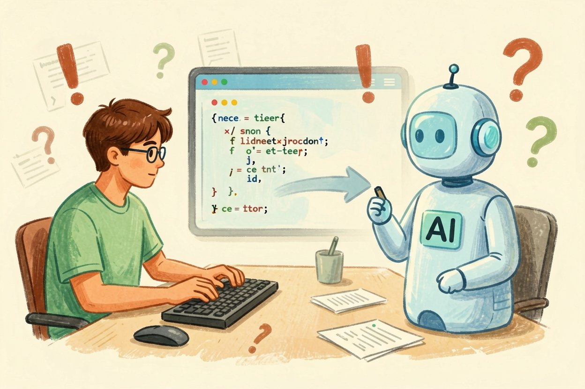
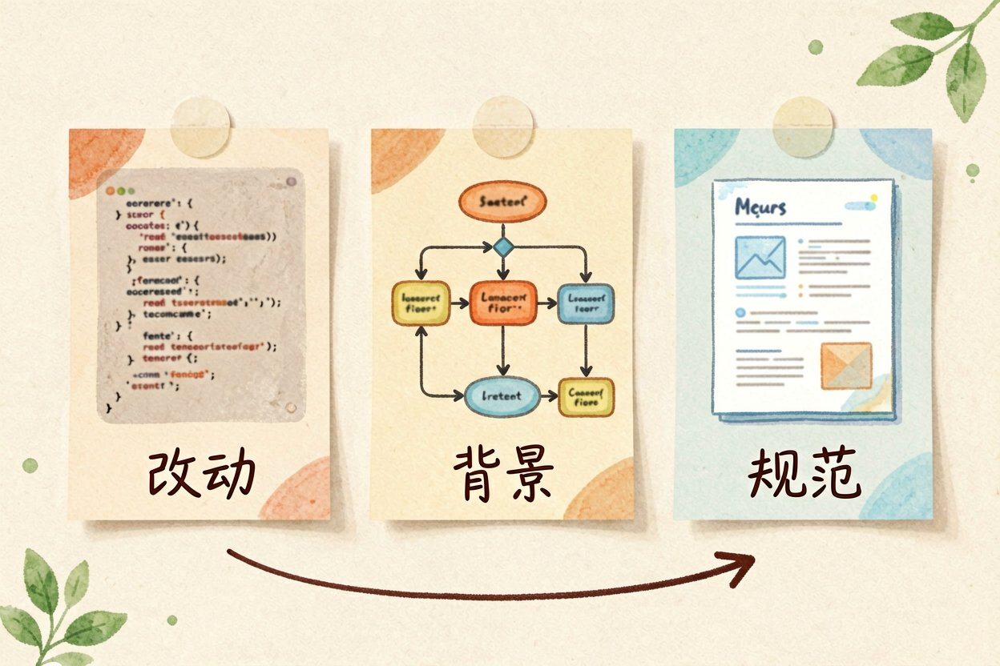
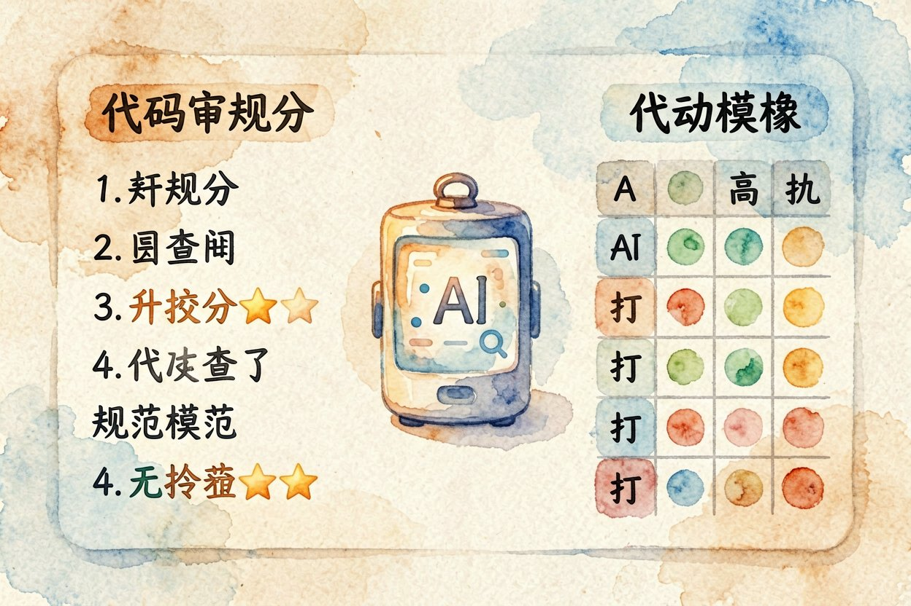
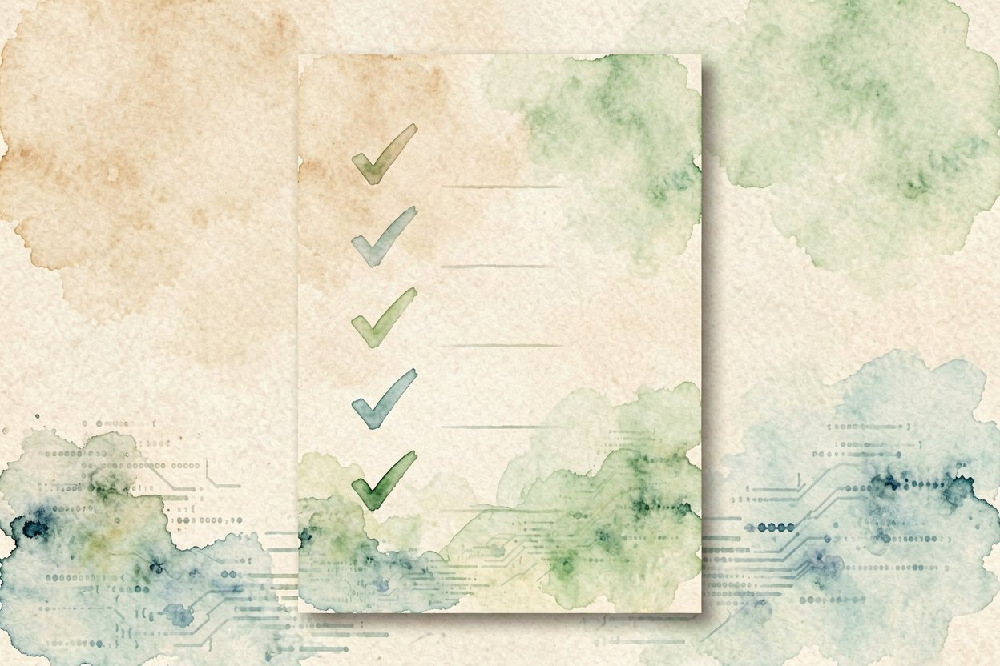

用 AI 做代码审查：让模型替你挑毛病
提交前让 AI 先扫一遍代码，空指针、资源没关、命名混乱都能被它点出来，比人眼快得多。
AI 代码审查是什么：一句话解释

AI 代码审查，就是把你刚写的改动贴给大模型，让它像经验丰富的同事那样挑问题。空指针、资源没释放、异常处理缺失、命名混乱，这些它都能较快点出来。
它和AI 调试代码互补：调试是出了问题去查，审查是出问题前去防。审查做得好，后面返工少。现在免费 AI 补全工具很多，审查也大多免费档就够用。
该喂给它的三样上下文

第一样是改动本身。把新增和修改的函数完整贴出来，别只贴片段，片段会让它误判上下文。
第二样是背景。这段代码服务于哪个功能、调用方是谁、有没有性能要求。背景越清楚，它提的建议越贴地。
第三样是规范。你们团队的命名习惯、禁止的用法、必须处理的错误码。没有规范，它容易按自己的口味挑刺。
请你以资深后端工程师身份审查以下改动：
1 指出可能的空指针、资源泄漏、并发问题
2 检查异常处理是否完整
3 按我们的规范：变量用驼峰，禁止吞掉异常
只列问题并给修改建议，不要重写全部代码。让它按你们的规范来评

把审查意见按严重度排序，先处理会出事故的，再管风格与命名，节奏才不会乱。
光说「帮我看看」会得到一堆泛泛而谈。把规范写进去，它就从「挑口味」变成「按标准查」，输出才有可操作性。
在Cursor 入门教程里也能把审查步骤接进编辑器，保存时自动跑一轮。团队可以把规范存成固定提示词，每次复用。
记住一点：它的建议是参考，不是命令。你觉得不对，就跳过。审查的目的是多一双眼睛，不是让模型替你拍板。
哪些问题它看不准
业务正确性它常看走眼。它不知道你们这条优惠规则的特殊边界，逻辑对不对还得你判断。
并发和竞态它也难稳。单看一段代码发现不了多线程下的时序问题，这类要靠测试和评审。
安全漏洞更不能全信它。它或许能指出明显的注入点，但深度审计得靠专业工具。GitHub Copilot 值不值里也提到，补全和审查都只是辅助。
团队怎么把它接进流程
最轻量的接法是预提交钩子。每次提交前本地跑一轮，把明显问题拦在出门前，不占用别人时间。
进阶是接进拉取请求。它自动对改动发评论， reviewer 先看 AI 标红处，省掉重复劳动。
记得把误报记下来。哪些它总误报，就写进规范黑名单，下次自动忽略，审查才越用越准。
还有一个常见误用：把 AI 的标红直接当结论贴进评审系统。它给的是线索不是定论，你逐条人眼确认，对的采纳、错的驳回并记一笔，团队经验才越攒越厚。报告里最好标「置信度」，哪些它很确定、哪些只是猜测，分得清， reviewer 才不浪费时间。
别把 AI 的审查结论当成免检章。AI 代码审查帮你省下重复劳动，但代码能不能上线，最终签字的人还是你。

本文信息核对于 2026-08-14。AI 产品的价格、免费额度与功能变动频繁，实际以各工具官网当前说明为准。